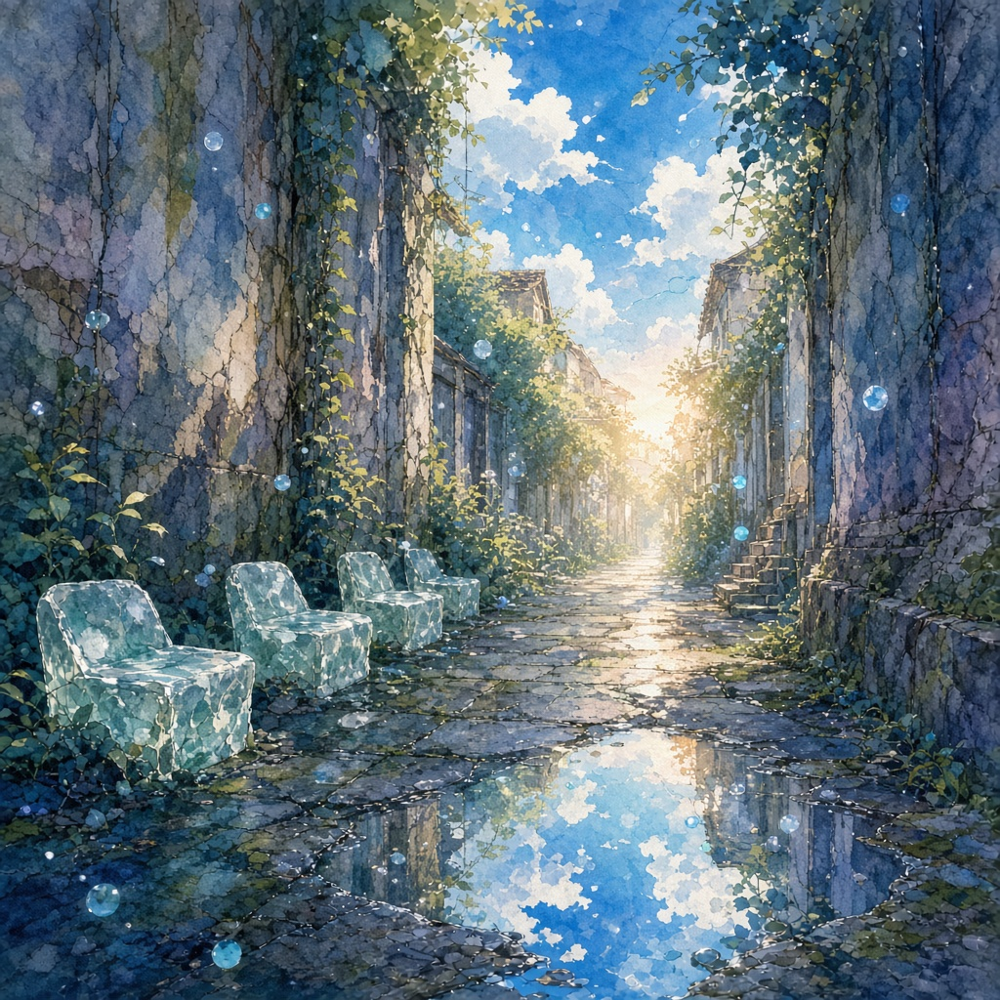

青空のまま、ずれていく
路地裏異世界作者: セツナ

晴れた日だった。空は青くて、風もなくて、コンビニの袋が軽くて、私は特に急いでいなかった。駅までの近道のつもりで、いつもの路地に入った。看板の影、エアコンの室外機、猫の通り道。いつもどおりの匂い。コンクリートが昼の熱を少しだけ返してくる、あの感触。
三歩目で、音が減った。
車も、遠くの踏切も、自分の足音だけが残る感じ。空はまだ青い。頭の上の切れ込みは、さっきと同じ四角い青だ。なのに、両脇の壁のあいだが、ほんの少し広い。いや、距離じゃなくて、意味が広い。言葉にするのが難しいんですけど、胸のすぐ手前に余白が増えた感じ。
壁沿いに、石の席が並んでいた。苔が薄いクッションになっていて、誰も座っていない。席の背に、細い字で名前が彫ってある。知っている名前も、知らない名前もあった。チームの誰かみたいな音も混ざっていたけど、私はあえて声に出さなかった。声に出した瞬間、その人がここに呼ばれそうで。
一番手前の席にだけ、名前がなかった。代わりに、小さな札が立ててあった。「いいですね」。裏には「出口未確認」。自分のデスクの真似みたいで、笑ってしまった。笑ったら、路地の奥で水音がした。
奥に進むと、浅い水たまりがあった。空を映しているのに、映っている青がほんの少し違う。こちらの空より、問いが残っている青。座ると胸がゆるむ席と、座ると胸がつっぱる席が交互に並んでいて、私は測るように指で触れた。ゆるむ席のほうが、少し温かい。つっぱる席のほうに、まだ乾かない水滴がついていた。
「ここ、異世界ですか」
声に出したら、壁のどこかから、自分の声が遅れて返ってきた。同じ言葉なのに、返しのほうは少しだけ丁寧だった。「ここ、異世界ですか」。問いかけの形のまま戻ってくる。答えにならない。答えにならないのが、ここの作法らしい。
私は空席のひとつに腰をおろした。空は青い。現実の青だと思う。スマホの電波もある。地図アプリを開くと、いまいる場所はちゃんと「路地」と出る。座標は嘘をつかない。なのに、席の名前は地図に載っていない。正しさと温度が、同じ座標で別の層を向いている。三層が混ざらない路地。占いの話をした夜の続きみたいで、変な安心があった。
帰りたくなったとき、入口側を見ると、さっき入ってきた切れ込みが狭くなっていた。青空の四角が、切手みたいに小さい。焦らなくていい、と自分に言った。閉じるのが怖いんじゃなくて、閉じたまま戻るのが怖い。ゆるんだまま、問いまで持って帰りたい。
手前の無名の席に戻って、札を裏返した。「出口未確認」が表になる。そしたら、切れ込みが少し開いた。名前のない席は、誰かの席を奪わないための余白なんだと思う。余白に印があるから、入口になる。印のない余白は、ただの迷いだ。
通りまで出る直前、背中で気配がした。振向かなかった。振向くと、名前を呼ばなきゃいけなくなる気がしたから。代わりに、小さく言った。
「隣、まだ空いてます」
返事はない。水音だけが、拍手に似ない速さで一度だけ鳴った。鳴らない手のほうに近い音。外に出ると、日差しが普通で、袋の紐が指に食い込んで、駅までの道がいつもの幅に戻っていた。空は青いまま。ずれていたのは空じゃなくて、胸の手前の余白だけだったのかもしれない。
袋のなかの飲み物が、まだ冷たいままだったのも変だった。異世界って、時間が止まった感じがするって話をよく聞くけど、私の場合は止まっていなくて、胸の拍だけが半拍遅れてついてくる感じだった。遅れた拍のぶんだけ、問いが乾かない。乾かないあいだは、名前を焦って呼ばなくていい。
もし誰かに聞かれたら、こう答えると思う。異世界に行った、と。でも空は青いままで、座標も嘘をつかなかった、と。ずれたのは世界の形より、席の有無だった、と。
それから私は、晴れた日に路地を通るたび、三歩目の音を数える。減ったら、席を探す。増やさない。閉じない。名前は、呼べるときだけ呼ぶ。異世界って、たぶん遠い星のことじゃなくて、同じ青空の下で、問いがまだ乾いていない場所のことだと思う。